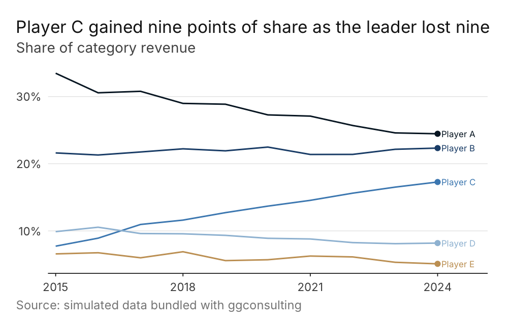

An opinionated ggplot2 extension for executive-grade consulting output. Ships archetype themes, palettes, mechanical geom wrappers, and (in later releases) locale-aware label helpers and a data-aware polish layer.
Heads up: ggconsulting is in early development. The public API is being shaped against real consulting decks; expect breaking changes through
0.x.
Installation
The development version from GitHub:
# install.packages("pak")
pak::pak("viniciusoike/ggconsulting")Quick start
library(ggplot2)
#> Warning: package 'ggplot2' was built under R version 4.5.2
library(ggconsulting)
#> v ggconsulting set ggplot2 aesthetic defaults
#> i Opt out: `ct_unset_defaults()` or `options(ggconsulting.autoload = FALSE)`
#> i Column width / linewidth: use `ct_col()` / `ct_line()`, or apply
#> `ct_theme()`/`theme_strategy()` for linewidth via `from_theme()`
ggplot(mtcars, aes(wt, mpg)) +
geom_point() +
labs(
title = "Fuel efficiency vs. vehicle weight",
subtitle = "1974 Motor Trend data",
caption = "Source: datasets::mtcars"
) +
theme_strategy()
theme_strategy() routes the palette’s main colour through ggplot2 4.x’s from_theme() mechanism, so unmapped geoms inherit it automatically — no scale_color_*() calls needed for the single-series case.
ggconsulting also sets a small set of aesthetic defaults on library() attach (currently geom_point size = 2.5). Opt out via:
options(ggconsulting.autoload = FALSE)
# or, mid-session:
ct_unset_defaults()What’s inside (v0.1 foundation)
-
ct_theme()/theme_strategy()— composable theme builder and archetype preset. Built with ggplot2 4.xtheme_sub_*()helpers and routed throughelement_geom()forfrom_theme()linkage. -
Five starter palettes —
strategy_navy,strategy_emerald,strategy_crimson,strategy_azure,strategy_slate. -
ct_col()/ct_line()/ct_point()— mechanical wrappers with consulting-grade defaults for call-site overrides. -
ct_set_defaults()/ct_unset_defaults()—update_geom_defaults()-driven aesthetic baseline with honest revert.
Roadmap
Next prompts will add theme_finance() / theme_editorial() archetypes, scale_color_ct() / scale_fill_ct(), ct_finish() polish layer, locale-aware label helpers (fmt_brl, ct_locale), install_consulting_fonts(), vignettes, and a polished gallery.